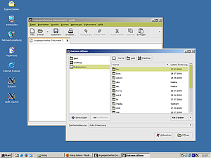

Xming
Xming  ist eine freie Portierung des XWindow Servers für Microsoft Windows Betriebssysteme. Xming teilt sich die gleiche Code-Basis wie Cygwin/X, hängt aber nicht selber von Cygwin ab. Xming ist daher ein kostenloser, leicht zu bedienender und voll funktionsfähiger XServer für Windows, wie ihn Windows selber nicht mitbringt.
ist eine freie Portierung des XWindow Servers für Microsoft Windows Betriebssysteme. Xming teilt sich die gleiche Code-Basis wie Cygwin/X, hängt aber nicht selber von Cygwin ab. Xming ist daher ein kostenloser, leicht zu bedienender und voll funktionsfähiger XServer für Windows, wie ihn Windows selber nicht mitbringt.
Wozu aber einen XServer für Windows? Will man einen Rechner - z.B. einen Server ohne Tastatur und Bildschirm - über das Netzwerk bedienen, so greift man meist auf SSH zurück. Damit kann man sich sicher, weil verschlüsselt, auf einem Rechner einloggen. Über diese SSH-Verbindung lassen sich jedoch auch Daten verschicken, sprich tunneln. Hier kommt nun der XServer ins Spiel. Auch der XServer kommuniziert über ein Netzwerkprotokoll mit dem Rechner. Das bedeutet, Rechner und XServer müssen nicht auf demselben Rechner laufen. Diese Weiterleitung des XServers nennt man X-Forwarding.

Installation¶
Sowohl auf dem Ubuntu-Rechner als auch auf dem Windows-Rechner muss Software installiert werden.
SSH-Server unter Ubuntu installieren¶
Ubuntu installiert von Haus aus keine Serverdienste. Das heißt, dass auch kein SSH-Server nach der Installation von Ubuntu läuft. Damit man sich von dem Windows-Rechner zum SSH-Server des Ubuntu-Rechners verbinden kann, muss dieser daher installiert werden. Die nötigen Informationen zur Installation des OpenSSH-Servers findet man hier.
Xming unter Windows installieren¶
Von der Projekt-Seite des Xming-Projektes muss man sich die Setups von
Xming
Xming-fonts
herunterladen. Diese Setups müssen anschließend ausgeführt werden. Bei der Installation muss man nichts beachten. Alle Einstellungen können bei den Voreinstellungen belassen werden.
Diese Setups enthalten keine SSH-Client-Software. Xming ist für plink, einer Kommandozeilen-Variante von PuTTY optimiert. Die plink.exe muss daher noch heruntergeladen und in das Installationsverzeichnis von Xming kopiert werden. Alternativ kann man portablePuTTY nutzen.
Erste Verbindung¶
Nach der Installation sollte die Verbindung einmalig per Hand aufgebaut werden, da plink eine Bestätigung des SSH-Keys benötigt. Man öffnet dazu eine MS-DOS-Eingabeaufforderung
Start -> Ausführen: cmd
und startet z.B. mittels
cd C:\Programme\Xming Xming :2 -emulate3buttons -multiwindow -clipboard set DISPLAY=localhost:2 plink -ssh -X -pw geheimespasswort benutzername@serverip xcalc
den XServer unter Windows, setzt das Display und öffnet dann über das Netzwerk das kleine Programm xcalc des Ubuntu-Rechners. Erscheint das Programm, ist alles richtig konfiguriert.
Einzelne Programme starten¶
Diese erste Verbindung war nur ein Versuch, ob die Verbindung klappt und damit der SSH-Schlüssel erfolgreich getauscht werden kann. Zum eigentlichen Verbindungsaufbau kann Xlaunch genutzt werden, das bei der Installation von Xming mitinstalliert wurde.
| Xming bietet verschiedene Modi. Interessant ist hier sicherlich Multiple Windows; dadurch können Linux-Anwendungen so gestartet werden, als ob sie Windows-Anwendungen seien. Sprich die Anwendungen erscheinen direkt in einem Windows-Fenster. | |
| Die Idee ist, gleich ein Programm zu starten. | |
| Hier können das zu startende Programm, der zu nutzende ssh-Client und der Server, zu dem man sich verbinden möchte, ausgewählt werden. | |
 | Aktiviert man die Option Clipboard, kann man sogar per Copy&Paste Texte zwischen dem Windows-Host und der Anwendung im XServer austauschen |
| Schließlich kann man diese Verbindung noch als Shortcut zum Beispiel auf dem Desktop ablegen. So ist die gewünschte Anwendung auf dem Ubuntu-Rechner nur einen Klick entfernt. |
Zu GDM via XDMCP verbinden¶
Es lässt sich auch der gesamte GNOME-Desktop inklusive dem GDM-Anmeldefenster übertragen. Dazu kann das Protokoll XDMCP genutzt werden. Allerdings ist hierbei zu beachtet, dass XDMCP nicht verschlüsselt übertragen wird und somit von der Sicherheit nicht an SSH heran reicht. Es sollte daher ausschließlich innerhalb eines LANs verwendet werden und nicht über das Internet. Bevor man sich per XDMCP verbinden kann, muss dieses Protokoll erst im GDM-Anmeldebildschirm aktiviert werden.
Im folgenden werden nun die Schritte beschrieben, die sich vom obigen Beispiel unterscheiden.
| XDMCP ist nicht im Multiple Windows Modus verfügbar. Es muss also mindestens die Option One Window genutzt werden. | |
 | Hier XDMCP auswählen |
| Normalerweise sollte der XDMCP Host automatisch gefunden werden können. Funktioniert das nicht, kann man die IP des Servers eintragen. |
Verbindet man sich nun, so sollte einen der GDM-Anmeldebildschirm empfangen.
- Erstellt mit Inyoka
-
 2004 – 2017 ubuntuusers.de • Einige Rechte vorbehalten
2004 – 2017 ubuntuusers.de • Einige Rechte vorbehalten
Lizenz • Kontakt • Datenschutz • Impressum • Serverstatus -
Serverhousing gespendet von